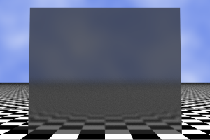

Dull materials emit light with the same intensity in all directions. When a ray of light hits a white wall, for instance, it can be reflected in any direction. On the contrary, when a light ray hits a perfect mirror, it is reflected in a given direction: that which makes the same angle to the normal vector as the incoming ray. These are opposite phenomena: perfect reflection versus perfect scattering.
In real life, many materials exhibit a mixed behavior. On one hand, they uniformly scatter part of the incoming light. The rest of the rays are reflected, and they are not always reflected in the exact angle as a perfect reflector would do. This behavior is known as glossy or diffuse specular reflection.
Diffuse specular reflection is emulated in XSight RT by using a roughness property in materials:
box(-3, -3, 0, +3, +3, 0.1,
metal(gray, 0.3, 1, 0.5, 0, 0, 0.002))
Zero roughness gives perfect reflectors; the greater the roughness, more blurry will be the reflection. The following images show, for comparison, a perfect reflecting wall and a glossy reflecting wall.
|  |
Glossy reflection are implemented by casting many rays from the reflector to the reflected objects. Each reflected ray will have a slightly different direction. If the sampler is configured with few samples by pixel, noise can be produced. Use always a sensible high number of samples by pixel when there are glossy reflection in a scene.
You can also add Phong highlights to diffuse reflective surfaces. In that case, it's recommended to use a wide highlight, by specifying a low Phong size.
You can use the Diffusion levels parameter, in the XSight RT options dialog, to control how diffuse reflection is implemented:
By default, XSight RT casts two secondary reflected rays when a primary ray hits a surface; primary rays are those rays emitted directly from the camera. This technique ensures that there will be enough rays to smooth the glossy reflection. However, it could be too expensive to cast two rays for secondary rays hitting a glossy surface. So, only one reflected ray is emitted for secondary rays.
The Diffusion levels options allows casting two rays for more levels. By specifying two diffusion levels, for instance, the first generation of secondary rays also cast two rays for glossy reflections.
Home | Small Instantiation Language overview | Materials | Perfect reflection | Phong highlights | Normals perturbation | Scenes | Predefined shapes